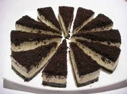
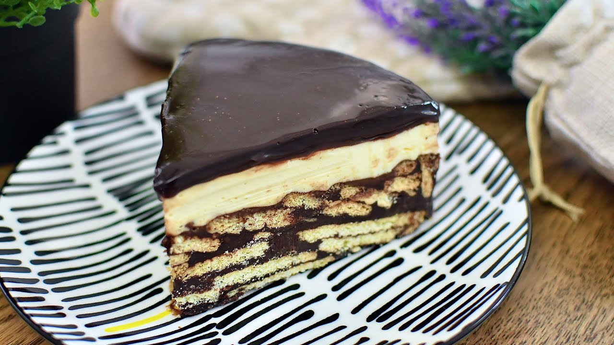
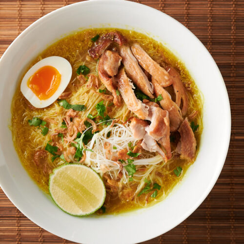
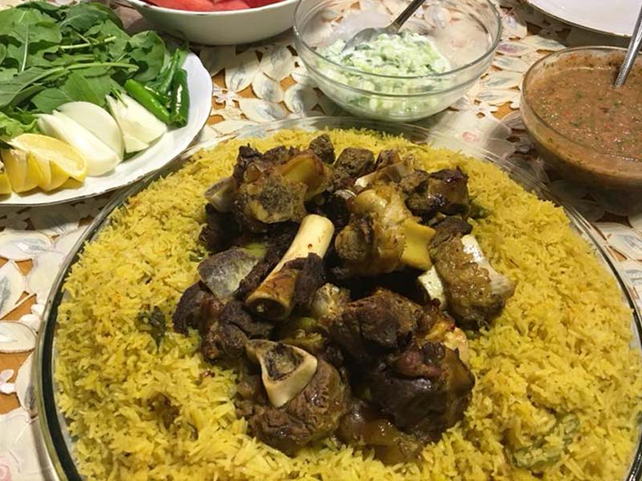

Hi my name is A'eisyah Shamsul. I'm a one and only girl in my family and I run my own business, so my MCO daily routine may be quite packed compared to others.
Starting from morning routine after subuh, I will helping my mom preparing our breakfast meals. After we finished our foods, I will clean up table and monitoring my brothers doing their homework and exercises. Entering P.M session, I will handle the kitchen activity, which is cooking. Cook all the menu for lunch and ready for Zuhr prayer. Everything is done, I will spend my leisure time to handle my online business such as replying customers, messages, dms and do some posting on my social media. On evening, after Asar prayer, I will go outside of my house to do some outdoors activities such as playing badminton with my brothers, delivery order fo my customer or if I have 'extra mood' I will baking or make a desserts fo Hi-Tea hehe. At night, I and my family perform prayer together and reading the Al-quran. Before sleep I do watching Sir Faizal's tutorial on handling HTML (for now) on his youtube channel. 
 